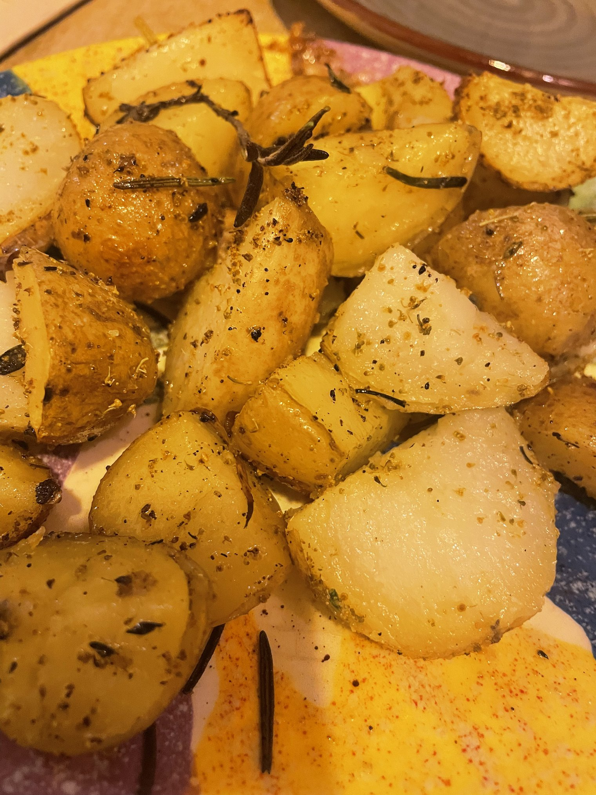

Patata, hinojo, ajo y romero al horno
Ingredients
2×
- 4 patatas
- 1 hinojo
- 3 dientes de ajo
- aceite de oliva
- sal
- pimienta
- 2 ramas de romero

Preparación
Paso 1
Cortar 4 patatas y 1 hinojo en trozos. Aplastar 3 dientes de ajo.
Paso 2
Aliñar con aceite de oliva, sal, pimienta y 2 ramas de romero.
Paso 3
Hornear 40min a 200ºC, removiendo a media cocción, hasta que estén doradas.